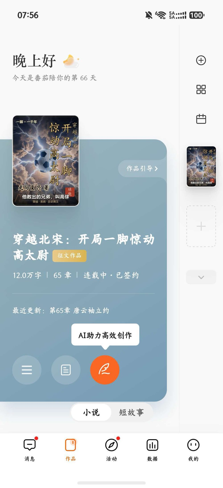
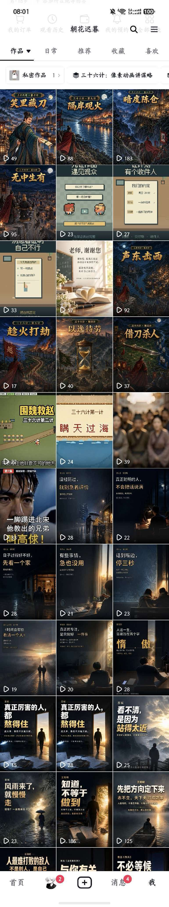
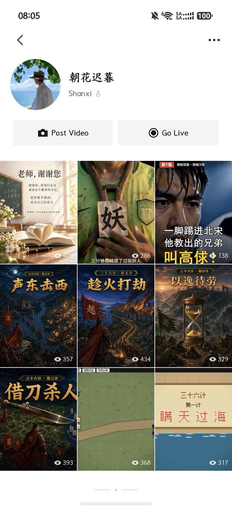
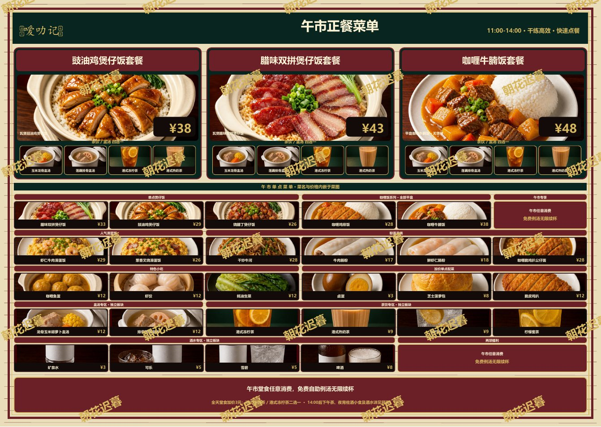
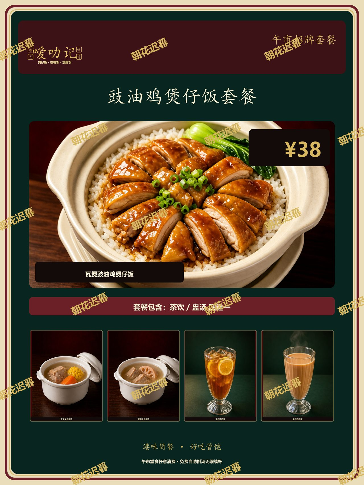
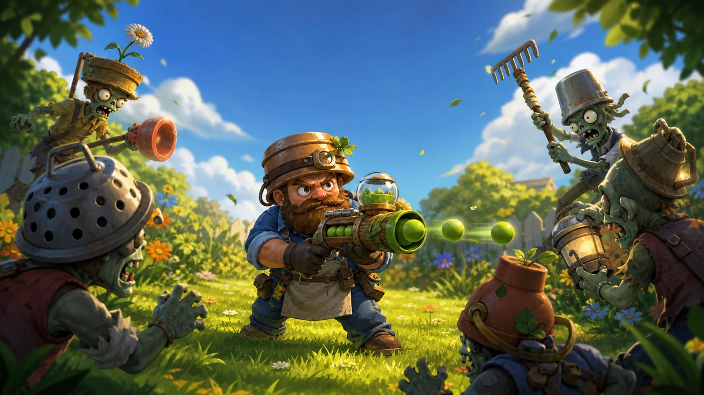
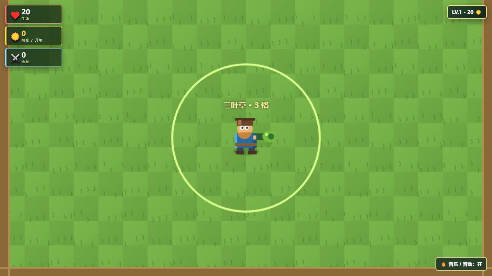

签约长篇小说的持续内容生产
从选题定位到持续更新，把一次创意变成可连续交付的内容产品。
- 背景
- 围绕穿越历史题材进行长篇连载，需要同时维持人物关系、章节节奏与更新稳定性。
- 个人动作
- 独立推进选题、章节规划、正文创作与持续更新，并在创作过程中使用 AI 辅助提效。
- 结果
- 完成约 12 万字、65 章，作品处于连载状态并已签约。
AI OPERATIONS · CONTENT · DELIVERY
我在寻找 AI 运营、AIGC 内容运营或 AI 应用运营方向的机会。近期实践覆盖长篇内容生产、短视频矩阵、餐饮商家视觉物料和 AI 网页原型。
焦亚峰 · 山西文化旅游职业大学 大数据工程技术（2026级）· 求职方向：AI运营实习生 / AIGC内容运营 / AI应用运营 · 所在地：山西太原 · 可到岗时间灵活，接受远程协作
SELECTED WORK
以下只写现有材料能够支持的事实；未统计的数据不做推测。

从选题定位到持续更新，把一次创意变成可连续交付的内容产品。
围绕历史故事与观点内容，完成从画面、包装到发布的连续内容实践。



从线下需求观察到可印刷物料，把“会做图”推进到真实商家场景。

借助 AI Coding 将想法推进为可玩的浏览器原型，并用版本迭代解决移动端体验问题。


ROLE FIT
基于近期 AI 内容运营、AI 产品运营和 AIGC 运营岗位的共同要求整理。
有长篇内容与短视频的连续生产经验，不只停留在单次生成。
证据：12万字、65章、双平台内容能把 ChatGPT、Codex 与图像/视频能力用于文案、视觉、网页和工作流。
证据：AI内容、商家物料、网页原型接触真实商家场景，能从模糊需求整理出明确的尺寸、内容和交付物。
证据：8家门店、菜单与KT板保留发布数据和版本说明，能根据问题继续调整内容或产品体验。
证据：播放数据、v2.8迭代记录HOW I WORK
明确内容给谁看、在哪个平台发布、最后需要交付什么。
让 AI 参与资料整理、初稿、画面或代码生成，关键选择与质量检查由自己完成。
保存截图、数据、文件和版本说明，让结果可展示、可追问、可继续优化。
CONTACT
可承担选题与内容制作、AI 工作流整理、产品教程、社媒发布、基础数据复盘和跨角色协作。